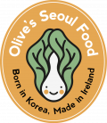
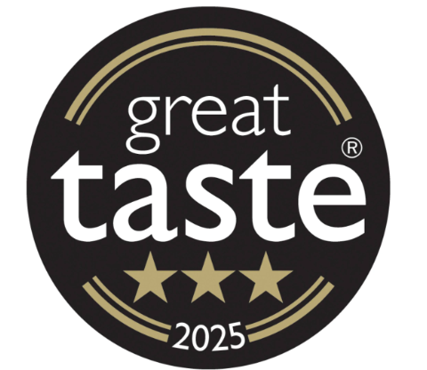

OGAM: Crafted for the Five Senses
Founded by Jay Choi, OGAM preserves the bold, balanced flavours of the Korea she grew up in — handmade in small batches here in Ireland. After 24 years abroad, a move to Cork and a new chapter of motherhood inspired Jay to explore holistic health and wellness through food. Her award‑winning sauces are crafted with minimal, honest ingredients and the intuition of someone who cooks by memory, not measurement.
OGAM means “five senses”. Jay’s goal is simple: to let people experience Korean food the way it’s meant to be with all five senses.
Read Her Story


As Featured In
OGAM has been featured in leading publications & taste tested by celebrity chefs & award winning local Cork Chefs alike


Our Awards
Recognised for excellence in flavour, craft and authenticity.
